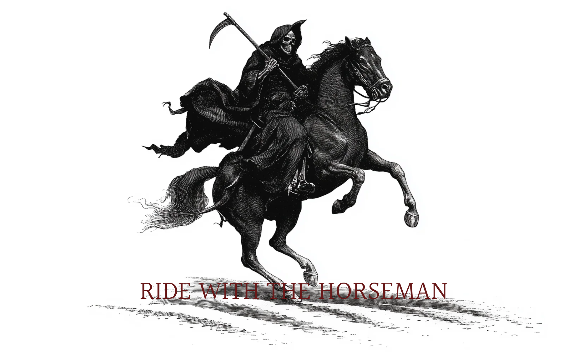

FACTHOLE
This project is an experiment in exploring fun ways of utilizing AI and automation.
On this website I'm running an automated daily script that scrapes Donald Trump's
Truth Social feed and runs it through a small AI agent that is capable of searching the web.
The agent then decides, sometimes with doubtful reasoning, if Mr Trump has made any false claims
before storing the results accordingly in a Supabase database.
The whole workflow is automated and the script runs once every day,
all I have to do is sit back and watch the judgement roll in.